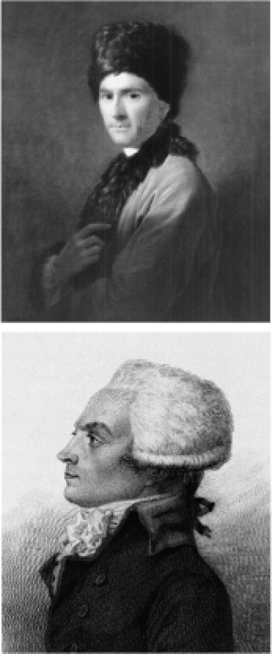

费希尔·埃姆斯心里想的可能是查理一世或路易十八，但在这两种情况下他都错了，除非是在美国。君主制和独裁制在欧洲并未永远沉没。拿破仑在军事上被击败后，法国的君主制复辟了。美国和英国的宪政思想在法国大革命的第一阶段占主导地位，但是立宪派很快就被雅各宾俱乐部的专政所荡开。雅各宾派把自己的统治称为专政，因为沿袭罗马的用法，他们视职权为在紧急状况期间行使绝对权力的正当依据，此紧急状况包括摧毁旧制度即保皇派在法国的起义，外国军队入侵法国、试图在革命扩散之前恢复君主制，以及他们在巴黎的对手的反对和阴谋（既有现实的也有想象的）。当然，专政仅仅适用于紧急状态期间，止于共和国恢复纯粹、得到净化，变得强大又安全之时。这种心态在美国新出现的与自由（或者说由法律保证的个人权利）相结合的多数统治意识中，几乎没有给民主留出什么时间。革命者远远越过了在世界面前表明独立权之正当性这一边界，如杰斐逊诉诸普遍理性的那些话；他们写出了《世界人权宣言》，煽动各国人民抛开国王和贵族，并承诺将在整个欧洲亲身推广这些原则。
在雅各宾俱乐部的桌子上，放置着卢梭的半身像。卢梭绝不应该为他们的行为负责，但是，他们在卢梭身上看到了对一项新的普世原则（尽管只有在革命之后才能适用）的陈述。“人民”不再只是那些凭借财产和教育才成为公民的人；出于两项强有力的原因，任何人现在都可以成为人民。卢梭在《社会契约论》中说：“人生而自由，却无往不在枷锁之中。”当然，这显然不合实情。我们其实生而无助，要依赖于母亲。但卢梭的意思很明显：“人是为自由而生的。”如果暴政的枷锁以及等级社会的人为惯例被抛弃，我们就会变得自由。那才是符合自然的。第二项强有力的因素是，就天性来说，我们每个人都有能力表达“公意”：也许最好的理解是，我们每个人都有能力（通过一种道德努力）普遍地而不是特别地运用意志。然而，这种公意（volonté générale）并不是数量上的多数，而是所有为摆脱自私、摆脱由社会的人为惯例和博学之士的傲慢所强加的通向自然生活的障碍而诚实地、简单地、真诚地努力的人所达成的共识。总而言之，他颠覆了共和主义的主张，即公民资格必须以财产和教育为基础。没有它们（至少如社会目前为止确立它们的那样），我们终于可以成为最佳状态的自己，发现我们的真正本性。（实际上，卢梭主张一种新型的家长式教育，不过是一种感觉和个人成长的教育，而不是知识的教育。）想到你对此主张可能在哪些方面表示赞同，卢梭第一次为民主进行了道德辩护。当时，法国大革命中每一个依次登场的派系都可以标榜“人民主权”。但是当时的困难无疑在于（也一直在于），得有人为人民说话。雅各宾派确信自己在为人民代言，并对“人为的”宪政约束，或者说密尔所称的、美国人实际上奉行的代议制政府无甚兴趣。

图6 卢梭受自然启发，罗伯斯庇尔由行动激励
亚历克西·德·托克维尔在开创性的《旧制度与大革命》（1856）一书卷首声称，法国大革命是一场类似于宗教革命的政治革命。“它有宗教运动所具有的全部独特的、标志性的特征，不仅蔓延到国外，而且是通过布道和宣传传播到那里的。”他说，无法想象有什么景象的奇怪程度更甚于“一种政治革命，它能激发人改变信仰，它的追随者像在国内发起时那样，以同样的热忱和激情向外国人宣讲……它假装朝向人类的重生更甚于法国的改革，所以引发了最为激烈的政治革命也从未激起过的热情”。他说，凭借其改宗和宣传（他使用了“宣传”这个词，当时不过是天主教会的一项职责），它吓坏了同时代的人，“如伊斯兰教所做的那样……把斗士、使徒和殉道者倾泻到世界各地”。
与罗马的“元老院与人民”一样，“自由、平等、博爱”写在所有的旗帜上。自由主要是免受皇室、贵族和教会控制的自由——革命获胜后个人自由就会到来，这是确定无疑的。平等不是经济平等，而是作为公民的身份平等。称呼的形式变成了公民罗伯斯庇尔、公民圣鞠斯特、公民丹东；不过，在所有那些为着相同的目标努力的人当中，或者在丹东于六月集结起来保卫共和国的公民军队中，博爱情感强烈而真实。在面向国民议会（the Assembly）发表的一次演说中，圣鞠斯特对此作了如下的注解：
但是人们开始发问：这样的过渡是否永无止境？毫不奇怪的是，当代一位保守派历史学家把这一点与托洛茨基的“永久革命论”相比拟。罗伯斯庇尔谈到了雅各宾派的理想目标，即“和平地享受自由和平等，让永恒的正义来主导”，但这只能体现于“由于不断分享共和感情而变得伟大”的国家。同时，他说革命的目的必须是对革命的敌人进行暴力恐吓（la terreur），不过没有爱国精神的恐怖是灾难性的，不带恐怖的爱国精神则是无力的。渐渐地，恐怖不仅意味着对反革命者迅速而无情的行动，同时也针对那些有可能反对革命的群体或个人。虽然他们可能在革命的象征意义上表现得如同高尚的罗马人——罗伯斯庇尔确实说过“自罗马人以来就没有历史了”，与罗马共和国的合法性观念的分裂却在一段时间内又弥合了。
“立宪政府的目的是维护共和国，革命政府的目的则是创造共和国。革命是与敌人展开的自由之战；宪制是得胜的、和平的自由政权。”罗伯斯庇尔继续说道，“立宪政府主要关注私人自由，革命政府则关注公民自由。”圣鞠斯特后来则呐喊：“那些若非反对我们就是不支持我们的人，他们是谁！”（这句话在革命传统中被长久铭记，于是当独裁者或者说党魁卡达尔于1970年代中期说“那些不反对我们的人就是支持我们”时，匈牙利人感到一丝愉悦：这是一个精明的新独裁者的相对宽容。）
历史学家们现在争论的是，大革命对法国社会的改变，程度是否如人们一度认为的那么深。不过，我们在此关注的不是这一点。关键在于，要想节制支持立宪的吉伦特派和反对立宪的雅各宾派，都有赖于能够激起和引导平民的力量。有一段时间，他们似乎是没有任何正式的民主机制的平民意愿的体现。他们的权力立基于声望，但城市里的平民已经显示出了力量。对于19世纪的许多欧洲人来说，无论是希望还是恐惧，法国大革命都是一项未竟的事业；但大多数政府不论是出于原则还是政治上的审慎，都认为需要对选举权进行一些改革，并对言论自由和出版自由给予某种法律保护。不管是出于对“人民”的尊重还是恐惧，共和传统在法国社会变得强大起来。在美国，民主则走向了自由主义，在保障公民权利的同时，对他们的要求越来越少。不过，民主在法国从来没有完全失去过平民权力那粗糙的共和锋芒。
如幸存下来的老雅各宾派所说的，拿破仑并没有激烈背叛大革命，而是领受了它的潜能并加以合理化。大革命把法国统一起来，实现了中央集权，而在旧制度下，法国的行政权在很大程度上寓于省级，高度分权。所以，拿破仑能比雅各宾派更明智地扮演罗马的角色。他那伟大的法律改革，即《拿破仑法典》，把传统的、仍属半封建性质的法国法律，改造成以罗马法原则为基础的更合理、更统一的结构。如果他自立为君，那就是在公开效法罗马的第一位皇帝，那位奥古斯都·恺撒曾自视为（或者坚决要求被他人视为）保护共和国法律的第一司法行政官。法国平民在与旧君主和旧制度大军的斗争中发现了爱国主义和民族主义，两种情感都很强烈，以至于拿破仑在战争中能够仰赖全民动员（levée en masse），比如大规模征兵。直到那个时候（在君主制下同样一直如此），征兵工作对于兵源都不得不严格把关，主要限定于传统上忠诚的乡村地区，毕竟训练和武装城市里的暴民太危险了。而且，无论如何征兵要想确保稳妥，只能靠强制少数男性适龄人员参军来补充正规军，而不是覆盖或压倒正规军；不到万不得已是不会武装全体平民的。不过在法国，革命精神依然旺盛，平民已经意识到了自己的力量和价值。拿破仑可以放心地把武器交给他们，因为他被视为贵族的反对者、革命的继承人，如果他自设军衔和序列，那也（大部分）是基于才干而不是出身。对于（大部分）公共职位，公开考试取代了庇护提携。所以，我们很容易声称，大规模征兵是民主时代的一种手段（最古老意义上的民主，而不是新兴的美国，杰斐逊所称的“世界最好的盼望”），正在迅速地淡化对法国原则的最初热情。